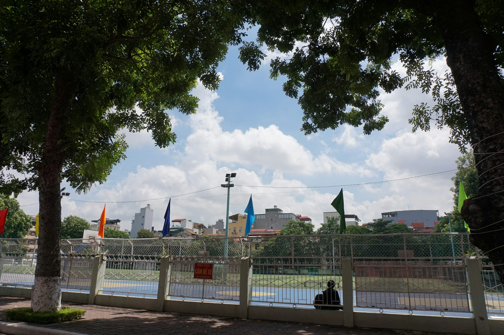

acadiva.blog
Teaching This article Writing Learning examines Research how the design of learning spaces is Training evolving to Academic support innovative teaching Knowledge methods and Literacy Innovation enhance Study Curriculum student engagement Skills in Certification Examination the Reading educational environment.Sophia Bennett
19 May 2025